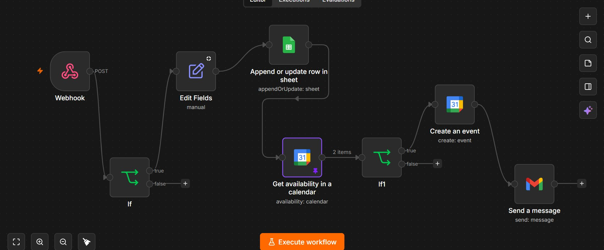
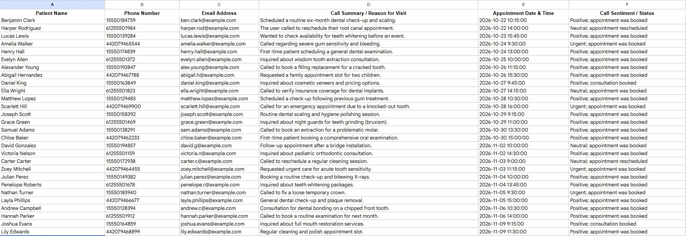

AI Voice Receptionist
Picks up every call, day or night, answers what patients ask first and books the visit while they are still on the line.
Problem it solvesMissed calls and after-hours inquiries
- Retell AI
- n8n
- Google Calendar
- Google Sheets
- Gmail
See it in action
The problem
Your team is chairside, checking someone in or on hold with an insurance carrier, and the phone keeps ringing. A caller who reaches voicemail often tries the next practice. After hours, every call goes unanswered, and that caller may be a new patient in pain.
The solution
A voice agent that answers right away, speaks naturally, handles the common questions, collects the patient’s details and books straight into your calendar. Every call is logged with a short summary, and anything the agent should not handle goes to a person.
What it does
- Answers every call, day and night
- Handles several calls at once
- Answers common questions on services, hours and location
- Collects new and returning patient details
- Books straight into your calendar
- Handles after-hours and urgent calls
- Passes the call to your team when a person is needed
- Logs every call with a short summary
What it looks like
- ✓ Calendar updated
- ✓ Call logged
- ✓ Front desk notified
Workflow
- Patient calls the practice
- AI answers and finds out what they need
- Details are captured and logged
- Calendar is checked and the visit is booked
- Confirmation goes out and your team is notified
Behind the scenes
The receptionist is backed by a real automation.


Technology
- Retell AI
- n8n
- Google Calendar
- Google Sheets
- Gmail
Want this running in your practice?
See it working first. I will map the workflow around the way your team already works.